Day 4: Exploring Mexico
Introduction to Mexico
Mexico is a colorful country with a rich history. The capital city is Mexico City, which is one of the largest cities in the world.
Big Cities
Other big cities in Mexico include Guadalajara and Monterrey. Each city has its own unique culture and attractions.
Ancient Civilizations
Mexico is known for its ancient civilizations like the Maya and Aztec. You can see their ruins in places like Chichen Itza and Teotihuacan.
Culture and Languages
Spanish is the main language in Mexico. The country is famous for its delicious food, like tacos and enchiladas, and its vibrant music and dance.
Heroes
Heroes from Mexico include Benito Juárez, who was a famous leader, and Frida Kahlo, a well-known artist.
States, Their Flags, and Capital Cities in Mexico
| State | Flag | Capital City |
|---|---|---|
| Aguascalientes | 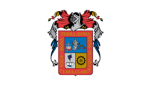 | Aguascalientes |
| Baja California | 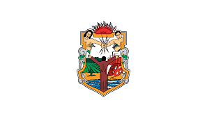 | Mexicali |
| Baja California Sur |  |
La Paz |
| Campeche |  |
Campeche |
| Chiapas | 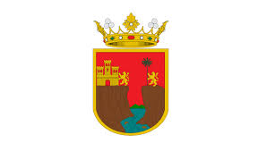 | Tuxtla Gutiérrez |
| Chihuahua |  |
Chihuahua |
| Coahuila | 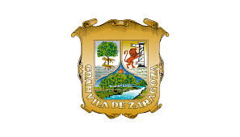 | Saltillo |
| Colima |  |
Colima |
| Durango |  |
Durango |
| Guanajuato |  |
Guanajuato |
| Guerrero | 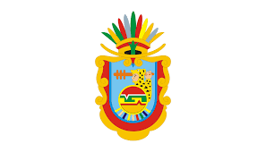 | Chilpancingo |
| Hidalgo | 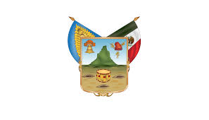 | Pachuca |
| Jalisco |  |
Guadalajara |
| México |  |
Toluca |
| Michoacán |  |
Morelia |
| Morelos |  |
Cuernavaca |
| Nayarit | 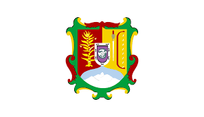 | Tepic |
| Nuevo León |  |
Monterrey |
| Oaxaca | 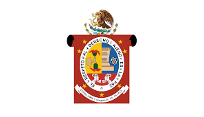 | Oaxaca de Juárez |
| Puebla | 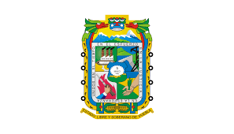 | Puebla City |
| Querétaro | 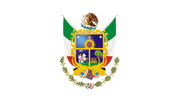 | Querétaro City |
| Quintana Roo |  |
Chetumal |
| San Luis Potosí | 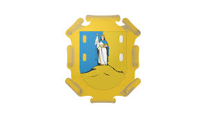 | San Luis Potosí City |
| Sinaloa | 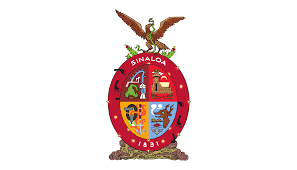 | Culiacán |
| Sonora |  |
Hermosillo |
| Tabasco |  |
Villahermosa |
| Tamaulipas |  |
Ciudad Victoria |
| Tlaxcala |  |
Tlaxcala City |
| Veracruz | 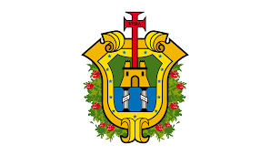 | Xalapa |
| Yucatán | 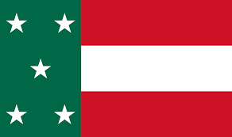 | Mérida |
| Zacatecas | 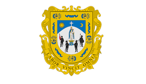 | Zacatecas City |
Mexico City
Mexico City is the big, busy heart of Mexico. It’s full of life, with lots of people, tall buildings, and fun places to visit. It’s like the center where everything happens in Mexico!
From high up, Mexico City looks like a giant maze with all its buildings and roads. It’s a place where history and modern life mix together.
Jalisco
Jalisco is a bright and colorful place in Mexico. It’s famous for mariachi music and tequila. The biggest city in Jalisco is called Guadalajara, and it’s full of pretty buildings and happy people.
In Jalisco, you can see beautiful landscapes with mountains, valleys, and lots of sunshine. It’s a place where you can enjoy music, dancing, and delicious food!
Yucatán
Yucatán is where you can find ancient Mayan ruins. These are very old buildings made by the Mayan people a long, long time ago. It’s like taking a trip back in time!
The capital city of Yucatán is Mérida. It’s a warm and welcoming place where people enjoy festivals and tasty foods. Yucatán is also near the ocean, with beautiful beaches to explore.
Nuevo León
Nuevo León is a state in Mexico known for its big, modern cities. The biggest city here is Monterrey. It has tall buildings and is surrounded by mountains, making it a mix of nature and city life.
Monterrey is full of energy, with lots of businesses and exciting places to visit. It’s a place where new ideas and old traditions come together.
Puebla
Puebla is a city full of history. It’s famous for its beautiful old buildings, colorful tiles, and delicious food like mole, which is a tasty sauce. Walking through Puebla feels like stepping into a storybook!
The city of Puebla is also known for its churches and historic places where important events in Mexico’s history happened. It’s a place rich in culture and tradition.
Quintana Roo
Quintana Roo is where you find some of the most beautiful beaches in Mexico. It’s a sunny place where people go to swim, relax, and see the bright blue ocean.
In Quintana Roo, there’s also a city called Chetumal, which is close to the ocean. It’s a calm and peaceful place, perfect for enjoying the sea and the sun.
Veracruz
Veracruz is a coastal state in Mexico, known for its warm weather and beaches. People in Veracruz love music, dancing, and eating fresh seafood.
Xalapa is the capital of Veracruz. It’s a green city with lots of plants and flowers. Veracruz is a place where the sea meets the land, full of life and color.
Chiapas
Chiapas is a state in Mexico known for its amazing nature. It has tall waterfalls, green forests, and mountains. It’s like a big, natural playground!
The capital city of Chiapas is Tuxtla Gutiérrez. It’s a city where people live close to nature. Chiapas is full of exciting places to explore, especially if you love the outdoors.
Michoacán
Michoacán is a place in Mexico with a lot of culture. It’s famous for its traditional dances, music, and arts and crafts. People here love to celebrate their history and traditions.
The heart of Michoacán is Morelia, a city full of beautiful old buildings. Walking through Morelia feels like taking a journey back in time.
Guanajuato
Guanajuato is one of the most colorful places in Mexico. The streets are full of bright colors, and the buildings look like they’re from a fairy tale.
The city of Guanajuato is famous for its history and culture. It’s a place where you can walk through tunnels, see theaters, and visit places that tell stories from Mexico’s past.
Did you know?
üåÆ Mexico is the birthplace of chocolate, corn, and chilies. Without these, our diets would look very different!
üèõÔ∏è The Aztecs introduced the world to popcorn. It was originally used for ceremonial purposes.
üìú Mexico has 35 UNESCO World Heritage sites, ranking it among the countries with the most such sites in the world.
üé∂ Mariachi music, a symbol of Mexican culture, originated in the western state of Jalisco.
üêã The Gulf of California, in Mexico, is home to the vaquita, the world's most endangered marine mammal.
üèñÔ∏è Mexico is the most visited Spanish-speaking country in the world, known for its stunning beaches and rich history.
üç´ The world-famous drink, hot chocolate, was introduced by the Maya people and later became popular in Europe.
üåã Mexico has the world's smallest volcano, Cuexcomate, which stands just 13 meters tall in Puebla.